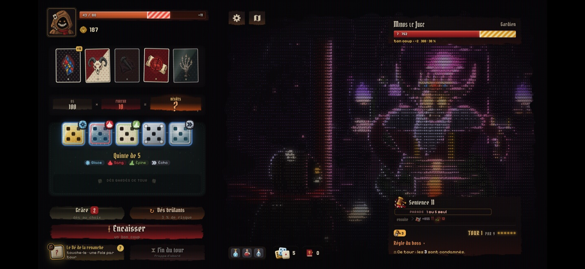

Dice of Dis
Un roguelite de dés à travers les neuf cercles de l'Enfer · A push-your-luck dice roguelite through the nine circles of Hell

Sur l'App Store · On the App StoreiPhone et iPad · Français et anglais · Sans publicité ni achat intégré
Ton âme sur cinq os
Lance cinq dés d'os, garde les figures qui marquent, tente ta chance, encaisse avant l'échec, puis frappe : Os × Fureur. Neuf cercles, neuf gardiens qui changent les règles de la table, 140 reliques et 19 pactes avec le Diable.
Bet your soul on five bones
Roll five bone dice, keep the figures that score, push your luck, bank before you bust, then strike for Bones × Fury. Nine circles, nine Wardens who change the rules of the table, 140 relics and 19 pacts with the Devil.